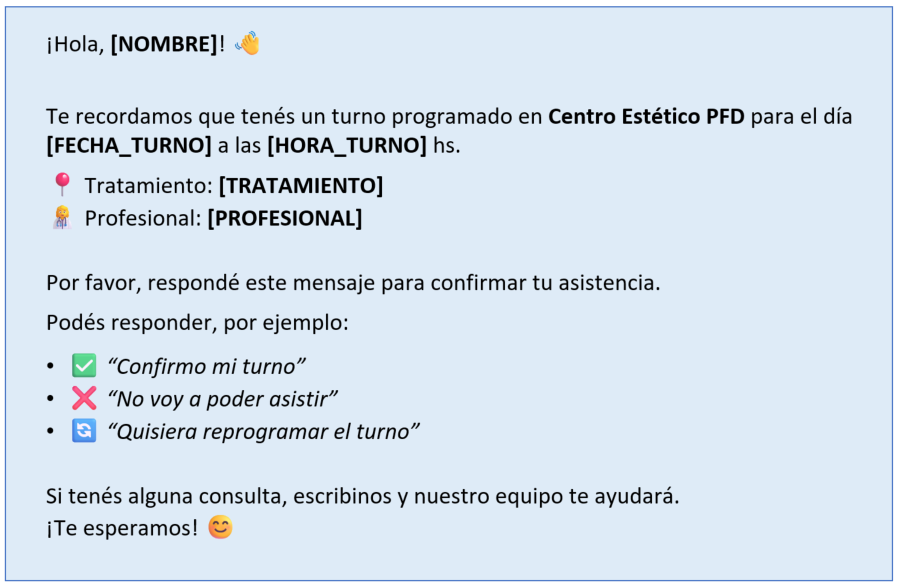

Visualización del flujo de trabajo automatizado para la reducción de inasistencias mediante IA y Automatización No-Code.
Gestión de turnos (Pacientes, fecha/hora, tratamientos).

Analiza el mensaje del paciente en lenguaje natural y clasifica la intención de la respuesta en:
Actualización automática del estado del turno en la BBDD.
Cancelación y liberación del espacio en la agenda del centro estético.
Envío de alerta o notificación al personal administrativo para intervención humana ante: